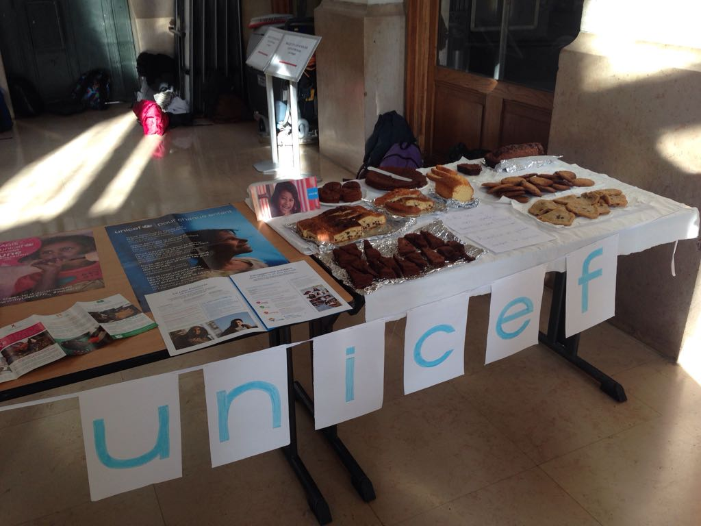
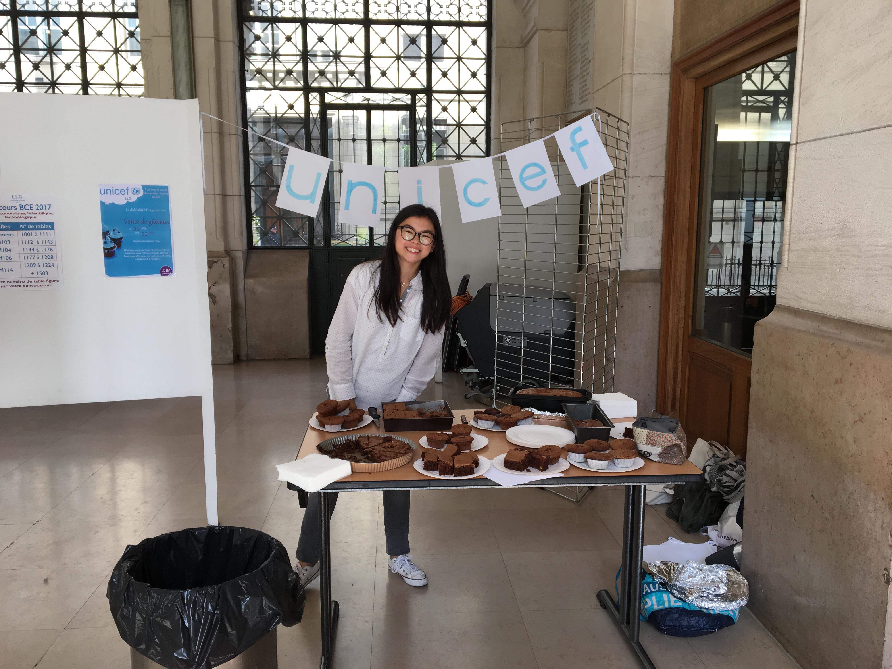

| ◄◄ CLUB PRECEDENT | RETOUR A LA PAGE DE PRESENTATION | CLUB SUIVANT ►► |
| CLUB UNICEF Déjà entendu parler du club UNICEF du lycée ? L'Unicef au cas où tu ne saurais pas, est le Fond des Nations Unis pour l'Enfance. Concrètement, il assure la protection, la nutrition, l'accès à l'eau potable, la vaccination, l'éducation aux enfants partout dans le monde. Il propose également aux enfants plus favorisés de s'exprimer et d'aider ceux qui le sont moins en créant leur club, comme nous au lycée ! On est convaincu qu'il est possible à notre échelle de participer à un monde meilleur, donc on a choisi de s'unir pour défendre cette cause. Nos missions : sensibiliser au droits des enfants et organiser des événements afin de récolter des fonds pour l'UNICEF. L'année dernière, on a récolté l'équivalent de plus de 4000 vaccins contre la polio en vendant des gâteaux dans le hall. Chaque euro, chaque action et chaque engagement a un impact! On a tous beaucoup de boulot et même parfois des activités en plus, et vu que chacun est dans ce cas, l'idée c'est de s'engager selon ses disponibilités du moment. Plus on est, plus on partage et plus nos projets voient le jour ! C'est à dire que tu peux participer aux événements tels que les ventes de gâteaux par exemple avec nous si un jour tu as du temps libre et que ça te fait plaisir Smile Tu peux faire des gâteaux, designer une affiche, proposer des événements... Tu peux également relayer les messages à ceux que tu connais (même tes amis en dehors du lycée, pour qu'ils créent leur propre club!), et ça c'est deja beaucoup pour nous ! Et puis surtout tu peux donner tes avis, tes idées et tes conseils; la communication c'est important et très utile ! Chacun fait ce qu'il lui plait, quand il a envie et quand il est disponible. Alors, ça te dirait de nous rejoindre ? On recrute et tout le monde est bienvenu ! Pour nous contacter, c'est simple ! Tu peux nous envoyer un mail à l'adresse ci-dessous avec ton nom, prénom, classe et numéro de téléphone. MAIL : llg.unicef@gmail.com PAGE FACEBOOK : https://www.facebook.com/Unicef-au-Lyc%C3%A9e-Louis-Le-Grand-125760318076875/?hc_ref=ARQWPd_BnSL3HaUCsVPqcXwP262-bqALFi1bDMNeR5qBqBdpOQePqgaal9wPnaJtsas&fref=nf |
|  |  |